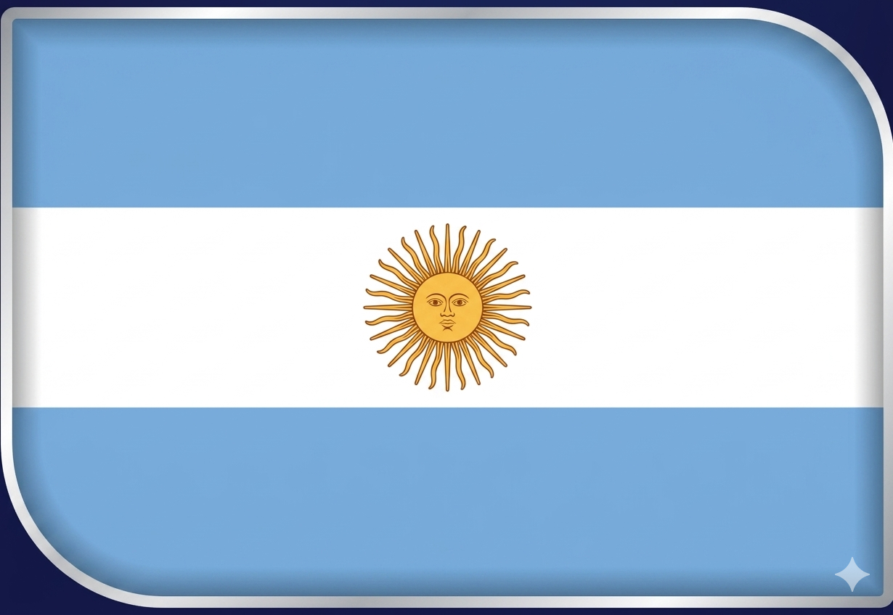
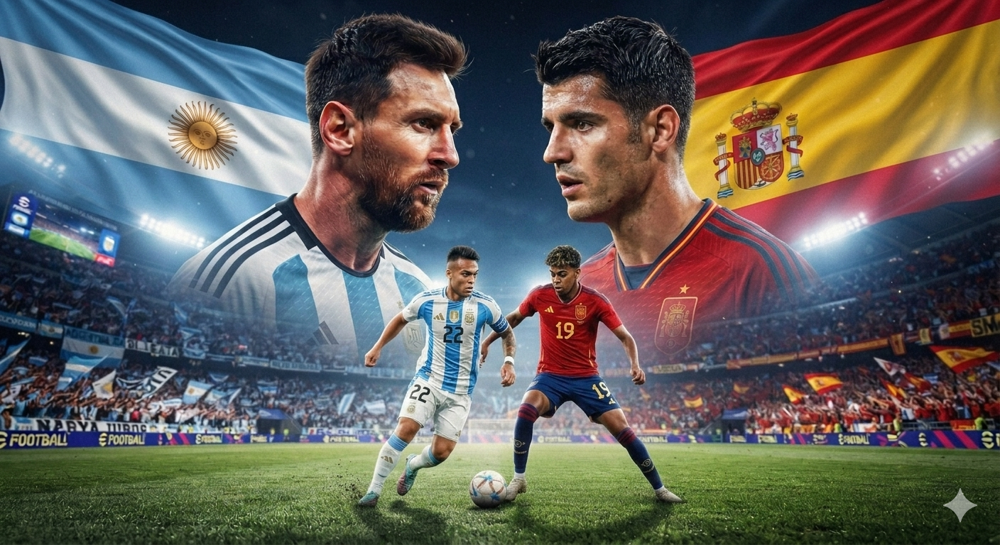

🐐
PREVIA
Messi busca cerrar su carrera mundialista con la cuarta estrella
Argentina llega como campeón defensor tras remontar 2-1 a Inglaterra en semifinales.

Incidencias simuladas — se completa en vivo
Argentina llega como campeón defensor tras remontar 2-1 a Inglaterra en semifinales.
De la Fuente apuesta por el 4-2-3-1 con Lamine Yamal y Dani Olmo como referentes ofensivos.
Más de 82.500 espectadores presenciarán el cierre del primer Mundial de 48 selecciones.
Solo se enfrentaron una vez en un Mundial, en 1966, con victoria albiceleste 2-1.
* Formaciones probables según prensa especializada previo a la Final (17–18/7/2026).
14 cruces históricos (1952–2018) · 1 solo antecedente mundialista, en 1966
Imágenes de la Previa · Final Mundial 2026

12 postales · Toca para expandir a pantalla completa
Datos e imágenes ilustrativos — se actualizan al confirmarse oficialmente.